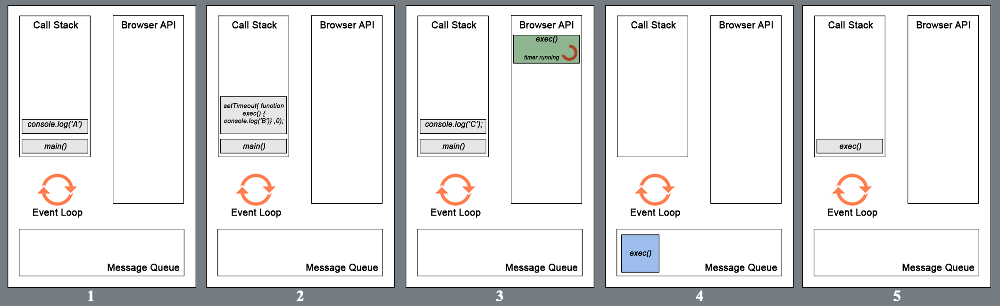

<!DOCTYPE html>
<html>
<head><meta name="generator" content="Hexo 3.9.0">
  <meta charset="utf-8">
  

  
  <title>JS 异步处理系列（一）—— Event Loop | QINGGUOING</title>
  <meta name="viewport" content="width=device-width, initial-scale=1, maximum-scale=1">
  <meta name="description" content="本文是 JavaScript 中的异步处理系列第一篇，介绍 JS 中的事件循环（event loop）概念和原理。">
<meta name="keywords" content="JS 异步处理系列,EventLoop">
<meta property="og:type" content="article">
<meta property="og:title" content="JS 异步处理系列（一）—— Event Loop">
<meta property="og:url" content="https://qingguoing.com/2019/05/13/JS-异步处理系列（一）-event loop/index.html">
<meta property="og:site_name" content="QINGGUOING">
<meta property="og:description" content="本文是 JavaScript 中的异步处理系列第一篇，介绍 JS 中的事件循环（event loop）概念和原理。">
<meta property="og:locale" content="default">
<meta property="og:image" content="https://qingguoing.com/2019/05/13/JS-异步处理系列（一）-event%20loop/eventLoop.png">
<meta property="og:image" content="https://qingguoing.com/2019/05/13/JS-异步处理系列（一）-event%20loop/execution.png">
<meta property="og:updated_time" content="2019-06-29T15:01:39.333Z">
<meta name="twitter:card" content="summary">
<meta name="twitter:title" content="JS 异步处理系列（一）—— Event Loop">
<meta name="twitter:description" content="本文是 JavaScript 中的异步处理系列第一篇，介绍 JS 中的事件循环（event loop）概念和原理。">
<meta name="twitter:image" content="https://qingguoing.com/2019/05/13/JS-异步处理系列（一）-event%20loop/eventLoop.png">
  
    <link rel="alternate" href="/atom.xml" title="QINGGUOING" type="application/atom+xml">
  
  
    <link rel="icon" href="/favicon.ico">
  
  
    <link href="//fonts.googleapis.com/css?family=Source+Code+Pro" rel="stylesheet" type="text/css">
  
  <link rel="stylesheet" href="/css/style.css">
</head>
</html>
<body>
  <div id="container">
    <div id="wrap">
      <header id="header">
  <div id="banner"></div>
  <div id="header-outer" class="outer">
    <div id="header-title" class="inner">
      <h1 id="logo-wrap">
        <a href="/" id="logo">QINGGUOING</a>
      </h1>
      
    </div>
    <div id="header-inner" class="inner">
      <nav id="main-nav">
        <a id="main-nav-toggle" class="nav-icon"></a>
        
          <a class="main-nav-link" href="/">Home</a>
        
          <a class="main-nav-link" href="/archives">Archives</a>
        
      </nav>
      <nav id="sub-nav">
        
          <a id="nav-rss-link" class="nav-icon" href="/atom.xml" title="RSS Feed"></a>
        
        <a id="nav-search-btn" class="nav-icon" title="Search"></a>
      </nav>
      <div id="search-form-wrap">
        <form action="//google.com/search" method="get" accept-charset="UTF-8" class="search-form"><input type="search" name="q" class="search-form-input" placeholder="Search"><button type="submit" class="search-form-submit">&#xF002;</button><input type="hidden" name="sitesearch" value="https://qingguoing.com"></form>
      </div>
    </div>
  </div>
</header>
      <div class="outer">
        <section id="main"><article id="post-JS-异步处理系列（一）-event loop" class="article article-type-post" itemscope itemprop="blogPost">
  <div class="article-meta">
    <a href="/2019/05/13/JS-异步处理系列（一）-event loop/" class="article-date">
  <time datetime="2019-05-13T14:40:18.000Z" itemprop="datePublished">2019-05-13</time>
</a>
    
  <div class="article-category">
    <a class="article-category-link" href="/categories/JavaScript/">JavaScript</a>
  </div>

  </div>
  <div class="article-inner">
    
    
      <header class="article-header">
        
  
    <h1 class="article-title" itemprop="name">
      JS 异步处理系列（一）—— Event Loop
    </h1>
  

      </header>
    
    <div class="article-entry" itemprop="articleBody">
      
        <p>本文是 JavaScript 中的异步处理系列第一篇，介绍 JS 中的事件循环（event loop）概念和原理。</p>
<a id="more"></a>
<h3 id="背景"><a href="#背景" class="headerlink" title="背景"></a>背景</h3><p>众所周知，JS 的执行是单线程的。主要是由于 JS 可以操作 DOM 和 CSS 样式，而为了防止多线程之间操作出现的冲突，所以 JS 是单线程的。<br>但 JS 中还是需要『并发』机制的，例如网络请求 xhr，如果结果返回比较慢，浏览器一直等待的话，就会出现页面假死的状态，即用户点击无反应。而 JS 的并发模型就是基于『事件循环』。</p>
<h3 id="事件循环"><a href="#事件循环" class="headerlink" title="事件循环"></a>事件循环</h3><p></p>
<ul>
<li>heap: 存储对象数据。</li>
<li>stack: JS 代码调用栈，按照 FILO 原则。例如当执行函数 a 时，函数 a 会被放入调用栈中，调用栈中维护的是当前函数的执行上下文等。当该函数执行完毕时，被弹出栈。这是 JS 同步代码的执行过程。</li>
<li>webapis: 浏览器封装提供的强大异步 API，可被 JS 直接调用执行。</li>
<li>callback queue: 回调事件队列。</li>
</ul>
<figure class="highlight js"><table><tr><td class="gutter"><pre><span class="line">1</span><br><span class="line">2</span><br><span class="line">3</span><br><span class="line">4</span><br><span class="line">5</span><br><span class="line">6</span><br><span class="line">7</span><br><span class="line">8</span><br></pre></td><td class="code"><pre><span class="line"><span class="function"><span class="keyword">function</span> <span class="title">main</span>(<span class="params"></span>)</span>&#123;</span><br><span class="line">  <span class="built_in">console</span>.log(<span class="string">'A'</span>);</span><br><span class="line">  setTimeout(</span><br><span class="line">    <span class="function"><span class="keyword">function</span> <span class="title">display</span>(<span class="params"></span>)</span>&#123; <span class="built_in">console</span>.log(<span class="string">'B'</span>); &#125;</span><br><span class="line">  ,<span class="number">0</span>);</span><br><span class="line">	<span class="built_in">console</span>.log(<span class="string">'C'</span>);</span><br><span class="line">&#125;</span><br><span class="line">main(); <span class="comment">// A C B</span></span><br></pre></td></tr></table></figure>
<p>JS 引擎执行上面代码的过程：<br></p>
<ol>
<li>首先 <code>main</code> 的调用作为一帧（frame）被放入调用栈中。然后 JS 引擎把函数的第一条调用语句 <code>console.log(&#39;A&#39;）</code> 推入调用栈中，执行完成后出栈。</li>
<li>接下来 <code>setTimeout</code> 被放入调用栈中开始执行。执行完毕之后出栈。</li>
<li><code>console.log(&#39;C&#39;)</code> 入栈。由于上面的计时器函数是 0ms，回调函数 <code>exec</code> 被放入消息队列中。</li>
<li><code>main</code> 函数的最后一条语句执行完毕后被推出调用栈。此时，调用栈为空，主进程开始询问回调消息队列是否有回调需要执行。</li>
<li>现在会调函数被推入调用栈中开始执行，打印出 C。这就是 JS 的事件循环。</li>
</ol>
<p>而由于异步任务类型的多样性，不同的异步任务根据执行的优先级，被分为两类：宏任务（macro task）和微任务（micro task）。</p>
<h3 id="宏任务-vs-微任务"><a href="#宏任务-vs-微任务" class="headerlink" title="宏任务 vs 微任务"></a>宏任务 vs 微任务</h3><p>宏任务代表：</p>
<ul>
<li><code>setTimeout</code></li>
<li><code>setInterval</code></li>
</ul>
<p>微任务代表：</p>
<ul>
<li><code>new MutationObserver</code></li>
<li><code>new Promise()</code></li>
</ul>
<p>上面介绍过，异步回调首先会被放到回调消息队列中。而根据异步事件的类型，该回调实际上是会被放到宏任务队列或者微任务队列中。在调用栈为空时，主线程会先去查看微任务队列是否有回调存在。如果不存在，那么再去查看宏任务队列；如果存在，则会依次取队列中的回调到调用栈执行，直到微任务队列为空，然后再去宏任务队列中，取相应的回调执行。如此反复，进入循环。</p>
<figure class="highlight js"><table><tr><td class="gutter"><pre><span class="line">1</span><br><span class="line">2</span><br><span class="line">3</span><br><span class="line">4</span><br><span class="line">5</span><br><span class="line">6</span><br><span class="line">7</span><br><span class="line">8</span><br></pre></td><td class="code"><pre><span class="line"><span class="function"><span class="keyword">function</span> <span class="title">main</span>(<span class="params"></span>) </span>&#123;</span><br><span class="line">  <span class="built_in">console</span>.log(<span class="string">'A'</span>);</span><br><span class="line">  setTimeout(<span class="function"><span class="params">()</span> =&gt;</span> <span class="built_in">console</span>.log(<span class="string">'B'</span>));</span><br><span class="line">  <span class="built_in">Promise</span>.resolve().then(<span class="function"><span class="params">()</span> =&gt;</span> <span class="built_in">console</span>.log(<span class="string">'C'</span>));</span><br><span class="line">  <span class="built_in">console</span>.log(<span class="string">'D'</span>);</span><br><span class="line">&#125;</span><br><span class="line"></span><br><span class="line">main(); <span class="comment">// A D C B</span></span><br></pre></td></tr></table></figure>
<h3 id="总结"><a href="#总结" class="headerlink" title="总结"></a>总结</h3><p>虽然 JS 的执行是单线程的，但是 JS 中还是有异步的回调和并发的概念。本文主要介绍浏览器中的 JS event loop，同时分析了相关调用步骤。</p>
<p>本文参考链接：</p>
<ol>
<li><a href="https://medium.com/front-end-weekly/javascript-event-loop-explained-4cd26af121d4" target="_blank" rel="noopener">JavaScript Event Loop Explained
</a></li>
</ol>

      
    </div>
    <footer class="article-footer">
      <a data-url="https://qingguoing.com/2019/05/13/JS-异步处理系列（一）-event loop/" data-id="cjxhnmik3000ajp8cb5nks4ey" class="article-share-link">Share</a>
      
      
  <ul class="article-tag-list"><li class="article-tag-list-item"><a class="article-tag-list-link" href="/tags/EventLoop/">EventLoop</a></li><li class="article-tag-list-item"><a class="article-tag-list-link" href="/tags/JS-异步处理系列/">JS 异步处理系列</a></li></ul>

    </footer>
  </div>
  
    
<nav id="article-nav">
  
    <a href="/2019/05/14/JS-异步处理系列（二）-Node-Event-Loop/" id="article-nav-newer" class="article-nav-link-wrap">
      <strong class="article-nav-caption">Newer</strong>
      <div class="article-nav-title">
        
          JS 异步处理系列（二）- Node Event Loop
        
      </div>
    </a>
  
  
    <a href="/2019/01/07/第十三届-D2-参会体验/" id="article-nav-older" class="article-nav-link-wrap">
      <strong class="article-nav-caption">Older</strong>
      <div class="article-nav-title">第十三届 D2 参会体验</div>
    </a>
  
</nav>

  
</article>

</section>
        
          <aside id="sidebar">
  
    
  <div class="widget-wrap">
    <h3 class="widget-title">Categories</h3>
    <div class="widget">
      <ul class="category-list"><li class="category-list-item"><a class="category-list-link" href="/categories/Babel/">Babel</a></li><li class="category-list-item"><a class="category-list-link" href="/categories/Diary/">Diary</a></li><li class="category-list-item"><a class="category-list-link" href="/categories/HTTP/">HTTP</a></li><li class="category-list-item"><a class="category-list-link" href="/categories/JavaScript/">JavaScript</a></li><li class="category-list-item"><a class="category-list-link" href="/categories/Linux/">Linux</a></li><li class="category-list-item"><a class="category-list-link" href="/categories/Node/">Node</a></li><li class="category-list-item"><a class="category-list-link" href="/categories/React/">React</a></li><li class="category-list-item"><a class="category-list-link" href="/categories/Tools/">Tools</a></li><li class="category-list-item"><a class="category-list-link" href="/categories/python/">python</a></li><li class="category-list-item"><a class="category-list-link" href="/categories/技术论坛/">技术论坛</a></li></ul>
    </div>
  </div>


  
    
  <div class="widget-wrap">
    <h3 class="widget-title">Tags</h3>
    <div class="widget">
      <ul class="tag-list"><li class="tag-list-item"><a class="tag-list-link" href="/tags/Async/">Async</a></li><li class="tag-list-item"><a class="tag-list-link" href="/tags/D2/">D2</a></li><li class="tag-list-item"><a class="tag-list-link" href="/tags/ES6/">ES6</a></li><li class="tag-list-item"><a class="tag-list-link" href="/tags/EventLoop/">EventLoop</a></li><li class="tag-list-item"><a class="tag-list-link" href="/tags/Flux/">Flux</a></li><li class="tag-list-item"><a class="tag-list-link" href="/tags/H5/">H5</a></li><li class="tag-list-item"><a class="tag-list-link" href="/tags/HTTP/">HTTP</a></li><li class="tag-list-item"><a class="tag-list-link" href="/tags/JS-异步处理系列/">JS 异步处理系列</a></li><li class="tag-list-item"><a class="tag-list-link" href="/tags/Node/">Node</a></li><li class="tag-list-item"><a class="tag-list-link" href="/tags/Performance/">Performance</a></li><li class="tag-list-item"><a class="tag-list-link" href="/tags/Promise/">Promise</a></li><li class="tag-list-item"><a class="tag-list-link" href="/tags/Redux/">Redux</a></li><li class="tag-list-item"><a class="tag-list-link" href="/tags/Vue/">Vue</a></li><li class="tag-list-item"><a class="tag-list-link" href="/tags/awk/">awk</a></li><li class="tag-list-item"><a class="tag-list-link" href="/tags/babel-plugin/">babel-plugin</a></li><li class="tag-list-item"><a class="tag-list-link" href="/tags/koa/">koa</a></li><li class="tag-list-item"><a class="tag-list-link" href="/tags/learning/">learning</a></li><li class="tag-list-item"><a class="tag-list-link" href="/tags/python/">python</a></li><li class="tag-list-item"><a class="tag-list-link" href="/tags/tools/">tools</a></li><li class="tag-list-item"><a class="tag-list-link" href="/tags/vscode/">vscode</a></li><li class="tag-list-item"><a class="tag-list-link" href="/tags/生活随笔/">生活随笔</a></li><li class="tag-list-item"><a class="tag-list-link" href="/tags/自动化测试/">自动化测试</a></li></ul>
    </div>
  </div>


  
    
  <div class="widget-wrap">
    <h3 class="widget-title">Tag Cloud</h3>
    <div class="widget tagcloud">
      <a href="/tags/Async/" style="font-size: 10px;">Async</a> <a href="/tags/D2/" style="font-size: 10px;">D2</a> <a href="/tags/ES6/" style="font-size: 16.67px;">ES6</a> <a href="/tags/EventLoop/" style="font-size: 13.33px;">EventLoop</a> <a href="/tags/Flux/" style="font-size: 13.33px;">Flux</a> <a href="/tags/H5/" style="font-size: 10px;">H5</a> <a href="/tags/HTTP/" style="font-size: 10px;">HTTP</a> <a href="/tags/JS-异步处理系列/" style="font-size: 20px;">JS 异步处理系列</a> <a href="/tags/Node/" style="font-size: 10px;">Node</a> <a href="/tags/Performance/" style="font-size: 10px;">Performance</a> <a href="/tags/Promise/" style="font-size: 10px;">Promise</a> <a href="/tags/Redux/" style="font-size: 10px;">Redux</a> <a href="/tags/Vue/" style="font-size: 10px;">Vue</a> <a href="/tags/awk/" style="font-size: 10px;">awk</a> <a href="/tags/babel-plugin/" style="font-size: 10px;">babel-plugin</a> <a href="/tags/koa/" style="font-size: 13.33px;">koa</a> <a href="/tags/learning/" style="font-size: 10px;">learning</a> <a href="/tags/python/" style="font-size: 10px;">python</a> <a href="/tags/tools/" style="font-size: 10px;">tools</a> <a href="/tags/vscode/" style="font-size: 10px;">vscode</a> <a href="/tags/生活随笔/" style="font-size: 10px;">生活随笔</a> <a href="/tags/自动化测试/" style="font-size: 10px;">自动化测试</a>
    </div>
  </div>

  
    
  <div class="widget-wrap">
    <h3 class="widget-title">Archives</h3>
    <div class="widget">
      <ul class="archive-list"><li class="archive-list-item"><a class="archive-list-link" href="/archives/2019/06/">June 2019</a></li><li class="archive-list-item"><a class="archive-list-link" href="/archives/2019/05/">May 2019</a></li><li class="archive-list-item"><a class="archive-list-link" href="/archives/2019/01/">January 2019</a></li><li class="archive-list-item"><a class="archive-list-link" href="/archives/2018/11/">November 2018</a></li><li class="archive-list-item"><a class="archive-list-link" href="/archives/2018/10/">October 2018</a></li><li class="archive-list-item"><a class="archive-list-link" href="/archives/2018/07/">July 2018</a></li><li class="archive-list-item"><a class="archive-list-link" href="/archives/2018/01/">January 2018</a></li><li class="archive-list-item"><a class="archive-list-link" href="/archives/2017/10/">October 2017</a></li><li class="archive-list-item"><a class="archive-list-link" href="/archives/2017/09/">September 2017</a></li><li class="archive-list-item"><a class="archive-list-link" href="/archives/2017/08/">August 2017</a></li><li class="archive-list-item"><a class="archive-list-link" href="/archives/2017/07/">July 2017</a></li><li class="archive-list-item"><a class="archive-list-link" href="/archives/2017/04/">April 2017</a></li><li class="archive-list-item"><a class="archive-list-link" href="/archives/2016/08/">August 2016</a></li></ul>
    </div>
  </div>


  
    
  <div class="widget-wrap">
    <h3 class="widget-title">Recent Posts</h3>
    <div class="widget">
      <ul>
        
          <li>
            <a href="/2019/06/27/自动处理对象结构中-null-字段的-babel-插件/">自动处理对象结构中 null 字段的 babel 插件</a>
          </li>
        
          <li>
            <a href="/2019/05/26/如何编写好一个测试用例/">如何编写好一个测试用例</a>
          </li>
        
          <li>
            <a href="/2019/05/20/JS-异步处理系列（四）-async-await/">JS 异步处理系列（四）- async &amp; await</a>
          </li>
        
          <li>
            <a href="/2019/05/19/JS-异步处理系列（三）-Promise/">JS 异步处理系列（三）- Promise</a>
          </li>
        
          <li>
            <a href="/2019/05/14/JS-异步处理系列（二）-Node-Event-Loop/">JS 异步处理系列（二）- Node Event Loop</a>
          </li>
        
      </ul>
    </div>
  </div>

  
</aside>
        
      </div>
      <footer id="footer">
  
  <div class="outer">
    <div id="footer-info" class="inner">
      &copy; 2019 qingguoing<br>
      Powered by <a href="http://hexo.io/" target="_blank">Hexo</a>
    </div>
  </div>
</footer>
    </div>
    <nav id="mobile-nav">
  
    <a href="/" class="mobile-nav-link">Home</a>
  
    <a href="/archives" class="mobile-nav-link">Archives</a>
  
</nav>
    

<script src="//ajax.googleapis.com/ajax/libs/jquery/2.0.3/jquery.min.js"></script>


  <link rel="stylesheet" href="/fancybox/jquery.fancybox.css">
  <script src="/fancybox/jquery.fancybox.pack.js"></script>


<script src="/js/script.js"></script>


  </div>
</body>
</html>